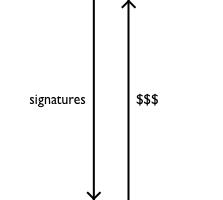
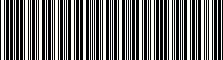

Tufte + sharing > Tufte
I have followed your work for a decade. I have digested The Visual Display of Quantitative Information. I “design from the outside in,” and I “do whatever it takes.” I attended your one-day course in Washington, DC on May 16, 2011, and while the content was excellent, I left scratching my head. Something about the experience felt wrong. I’ve been preoccupied the rest of the week trying to figure out what it was, and am motivated to share the following with ...
|
You. It was really hard to convince you not to sign my books. You signed two of my friend’s books. You signed one of his books twice. I tried to shake your hand instead. You extended your left hand because you were holding a silver Sharpie in your right hand. It was awkward. You have an interesting range of signatures, from conventional to stylized: Your latest book, published in 2006, bears the stylized version on its spine, and you also use it for your art gallery, which opened in October of 2010. It is the logo for the ET brand: . All of the above examples date from between the book and the gallery, so their variation is not a simple matter of evolution. Rather, it seems to correlate to perceived value to you. For example, on a fine art print ($200+), you apparently use the full, conventional signature. For the masses attending your course, it appears that you tend towards the stylized form (such were the examples I personally witnessed). |
||||
|  | ||||
|  |
Me. This is the actual barcode that I was instructed to print out and bring with me to the course. There was no apparent purpose for it: the person at the registration desk didn’t scan it, she read my name and crossed it off a paper list.
|
| Over the decades you’ve developed a powerful brand. But is the brand primarily about the |
ideas content practices community |
? |
Microsoft sacrifices design excellence for profit, and we end up with the—deadly!—pitch culture of PowerPoint. On the other hand, scientists and those who work in the public interest are credible because they present evidence instead of a sales pitch. Do you work in the public interest? Are you credible?
“Thirty-five, forty dollars a book? 1.4 million copies?”
he says, with a quizzical smile, when I ask about money.
“You can multiply.”—June, 2007
In the evening after attending your course, I happened to discover this video from a couple months ago about some of your recent sculptures:
The title sequence shows 11 abstract table-standing “sculpture forgings.” Then we segue to the artist at work. Eighteen taps with the mallet, a bit of the automatic hammer, and a run through the saw bring us to this embarrassing exchange with an invisible assistant:
“It’s funny how we keep getting these profiles!”
“Yeah, well, we ... we see faces where, you know, all wh...”
“... in everything, right!?”
“Right, right.”
Groan! Cut to the auctioneer.
“At fifteen five. Back with Alex, at fifteen five. Shall we try one more? At fifteen five. At fifteen million, five hundred thousand dollars, and the bid is with Alex, against the five of you. At fifteen million, five hundred thousand dollars, then. Fair warning! Last chance! At fifteen million ... five hundred ... thousand dollars. [bang!] Thank you Alex! And the bid is 0055, fifteen million five.”
We heard the astounding price seven times: $15,500,000.00. We recall the 11 pieces in the opening sequence. We can multiply.
Now back to the workshop. The enthusiast is given a name and a face. Wielding another piece of hot metal, he asks, “What are we doing with this guy?”
“Uh ... give it to me!”
“It’s all you.”
Indeed.
After your gallery opened, you were asked about the story behind it. You begged off an answer, but added a postscript: “An informative guide is Don Thompson’s book, The $12 Million Stuffed Shark: The Curious Economics of Contemporary Art.” Here is a summary of the book from an Amazon review:
[T]his book is an in-depth study of the way the contemporary art market functions, [...] the importance of art branding in creating an artist’s reputation [...] and, most importantly, how these art brands are created. One insightful conclusion is that the art market, and contemporary art in particular, is as much brand-driven as any other high-end luxury market.
The content in your books and presentation is excellent. The brand feels like selfish, distracting chartjunk.
To give you the benefit of the doubt, let’s think that your “minor celebrity” has simply exceeded your expectations, and you’re not sure quite how to handle it. This whole self-publishing thing has worked out too well!
One practice you advocate is finding examples of excellence and emulating them. In thinking about how to lead a global movement that isn’t marred by self-interest, one exemplar familiar to me is Guido van Rossum, the creator of the Python open-source programming language and so-called “Benevolent Dictator for Life” (BDFL) of the Python community. Since 1991 he has grown the Python community into a well-established, non-commercial, global movement. However, the Python community is clearly not about him, it is about the product, Python. The language is not called Guido. Its logo is not a stylized GvR, and the annual conference is not called BDFLCon. The nickname was, of course, not his idea. I’ve interacted with Guido on a few occasions, and he’s never had a Sharpie. I’m sure he will be open to a conversation if you want his advice.
This past Monday you made a passing comment, “You and ... I are not rockstars,” which is true on its face. That said, another possible role model that I’ll mention is Paul Simon. Check out this recent video where he invites a fan onstage during a show, and coaches her through a performance of one of his songs:
So beautiful! How human! Here is a world-class performer, giving us his absolute best in his later years. Perfectly at ease, he brings Rayna into his spotlight, and then steps back, but without leaving her stranded. He turns her into a hero. Such grace! With due respect to Brad McDougall, Rayna Ford appears here in a much more flattering light than your friend does in the sculpture video. Paul may be more difficult to reach than Guido, but I expect you’ll be able to, if you want his advice on graceful celebrity.
You have in fact created a powerful platform for improving humanity’s individual and collective cognitive capacity. If that or something like it is truly your mission—and I believe it is—then I suggest it would be better served by a brand that isn’t centered around Edward Tufte. What if you opened up Graphics Press to other authors? What if you embraced financial transparency, and started a non-profit Foundation for Beautiful Evidence? What if you granted fellowships for research into individual and collective cognition? What if you reenvisioned the university itself, that den of bureaucracy? Then you would be creating something that I would be interested to be a part of.
Sincerely,
Chad W. L. Whitacre
716 Park Road
Ambridge, PA 15003
724-251-9777
chad@zetaweb.com
www.whit537.org
Sunday, May 22, 2011
{kind=link}